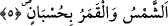

Âdem (a.s.)’ı yarattı ve ona bütün varlıkların isimlerini ve lisanlarını öğretti. Âdem
(a.s.) en üstünü arapça olmak üzere yediyüzbin dille konuşurdu.
Acizane derim ki; Allah’ın öğretmesi, dil, harf gibi vâsıtalı veya vâsıtasız olsun
Allah’ın nefsî kelamı her türlü kılıftan soyutlanmış olduğu halde, çeşitli dillerle hitap
etmesi nasıl olur, denilirse? Cevap: “Evet öyledir. Ancak, ilâhî kelamın mahlûkâta
inmesi ve gönderilmesini kavrayabilmeleri için kılıfa kesin ihtiyaç vardır. Meselâ, ilâhî
konuşmaya, anlaşılabilmesi için sonradan arapça bir kılıf giydirilmiştir. Biz kendi
nefsimizde bazan arapça, bazan türkçe, bazan de farsça olarak bize gelen ilham’ın
zevkini bir meleğin aracılığı olmadan tatmışızdır. Çünkü Allah’tan alınanlar kıyâmet
günü hariç hiç bir zaman kesilmez. Bu da çoğunluğu görünmeyen melek aracılığı ile
olmak üzere vâsıtasızdır. Bunu böyle bil!”
5. Güneş ve ay bir hesaba göre (hareket etmekte) dir.
Hüsbân kelimesi, “hesap” mânâsınadır. Âyet-i kerîme’nin mânâsı, Güneş ve ay
belirlenmiş hesab ölçüleriyle, burçlarında ve yörüngelerinde hareket etmektedirler. Bu
hareket sebebiyle dünyanın bir takım işleri düzenlenir. Aylar, haftalar, günler belli olur.
Mevsimler değişir. Yıllar ve hesaba dayalı vakitler bu vesile ile bilinir. Ay hesabına
dayalı olan yıl, üçyüz elli dört gün, güneş hesabına dayalı yıl, üçyüz altmış beş gün altı
saattır.
Burada burçların göğün güneşine, kalp küresinin ayına ve zâtî tecellîlerinin
burçlarında, isimler ve sıfatların tecelligâhı olan yörüngelerinde hareket etmelerine bir
işâret vardır. Bütün bu hareketler her ikisinin de istidâd ve kabiliyetlerine göre
paylaştırılmıştır ve bilinen hesap ölçüleri iledir.
6. Bitkiler ve ağaçlar secde ederler.
“Bitkiler” yani, üzüm çubuğu, kabak ve benzeri yerden biten ve kökü olmayan bitkiler
ve kökleri bulunan “ağaçlar secde ederler.”
Müntekâ’da kaydedildiğine göre herhangi bir bitki kendi hâline bırakılıp
olgunlaştığında tohum çıkarıp kendi kendine koparsa ona ağaç denmez. Meyvesi
olgunlaşıp çekirdeği çıkardığı halde senesi içinde kendisinden kopmazsa ona ağaç
denir. Bir mükellefin gönülden secde ederek itâat ettiği gibi, bitkiler ve ağaçlar da
tabîatları îcâbı kendilerinden beklendiği şekilde Allah’a itâat ederler, secde ederler.
Yahut, “Allah’ın yarattığı her hangi bir şeyi görmediler mi? Onun gölgeleri,